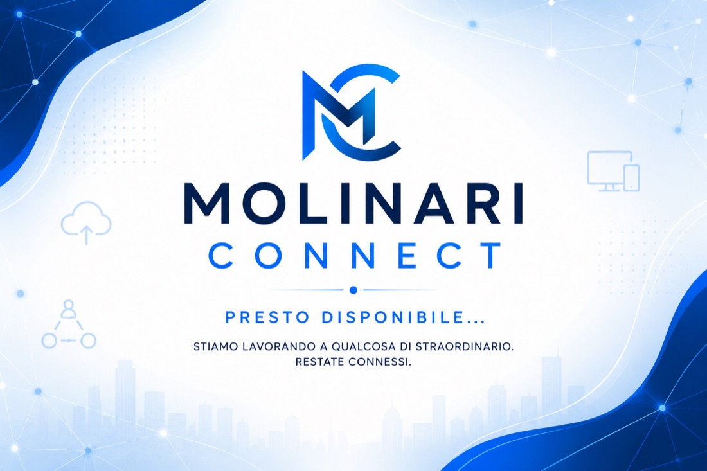

Molinari Connect
Piattaforma digitale pensata per facilitare la comunicazione tra scuola, studenti e famiglie. Attualmente in fase di concept e sviluppo iniziale.

Il problema
La comunicazione scolastica passa spesso per canali frammentati (carta, email, gruppi informali), rendendo difficile tenere tutto organizzato in un unico posto.
La soluzione
Una piattaforma unica che centralizza comunicazioni, avvisi e materiali scolastici in un'interfaccia semplice da usare per tutti.
Funzionalità principali
- Bacheca avvisi centralizzata (concept)
- Area materiali didattici (concept)
- Design pensato per famiglie e studenti
- Prototipo interfaccia in sviluppo
Tecnologie utilizzate
Cosa ho imparato
Progettare un'esperienza utente pensata per pubblici molto diversi tra loro (studenti, docenti, genitori) partendo dalle reali esigenze di comunicazione.
Sviluppi futuri
Passare dal concept a un prototipo funzionante, con autenticazione e gestione ruoli (studente, docente, genitore).